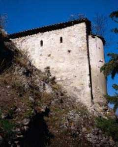

Το κάστρο των Σερβίων
 Η πρώτη ονομασία των Σερβίων, από τα χρόνια των Μακεδόνων και μέχρι τις αρχές του 2ου μ.Χ. αιώνα, ήταν "Φυλακαί". Όταν όμως την πόλη των "Φυλακών" κατέλαβαν οι Ρωμαίοι, την ονόμασαν στη δική τους γλώσσα Servia, δηλαδή φυλακτήρια, παρατηρητήρια (από το λατινικό ρήμα servo που σημαίνει φυλάττω, παρατηρώ). Με το ένα ή το άλλο όνομα αποδίδονταν η πραγματικότητα μιας πόλης, η οποία για αιώνες αποτελούσε ένα απόρθητο φρούριο που ήλεγχε τις μοναδικές διόδους μεταξύ Μακεδονίας και Θεσσαλίας στην περιοχή. Από το κάστρο των Σερβίων, που βρίσκεται ανάμεσα σε δυο εντυπωσιακά φαράγγια, σώζονται τμήμα της ακρόπολης, διάσπαρτα τείχη, βυζαντινές εκκλησίες, κρήνες, τμήματα συστημάτων ύδρευσης και βάσεις κατοικιών. Το κάστρο αλώθηκε από τους Τούρκους, μετά από μακρόχρονη πολιορκία, το 1393, και τα Σέρβια έμειναν υπό την τουρκική κατοχή μέχρι το 1912. | ||